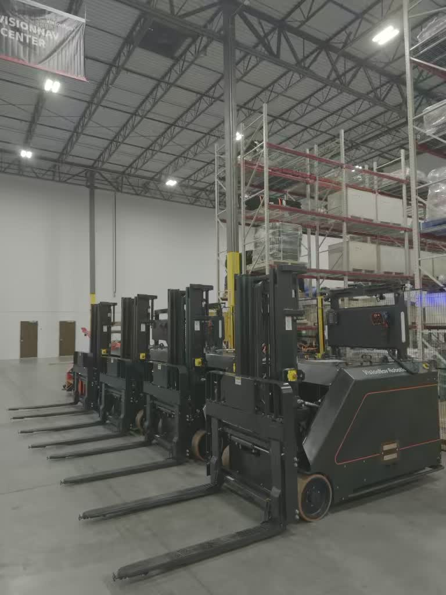
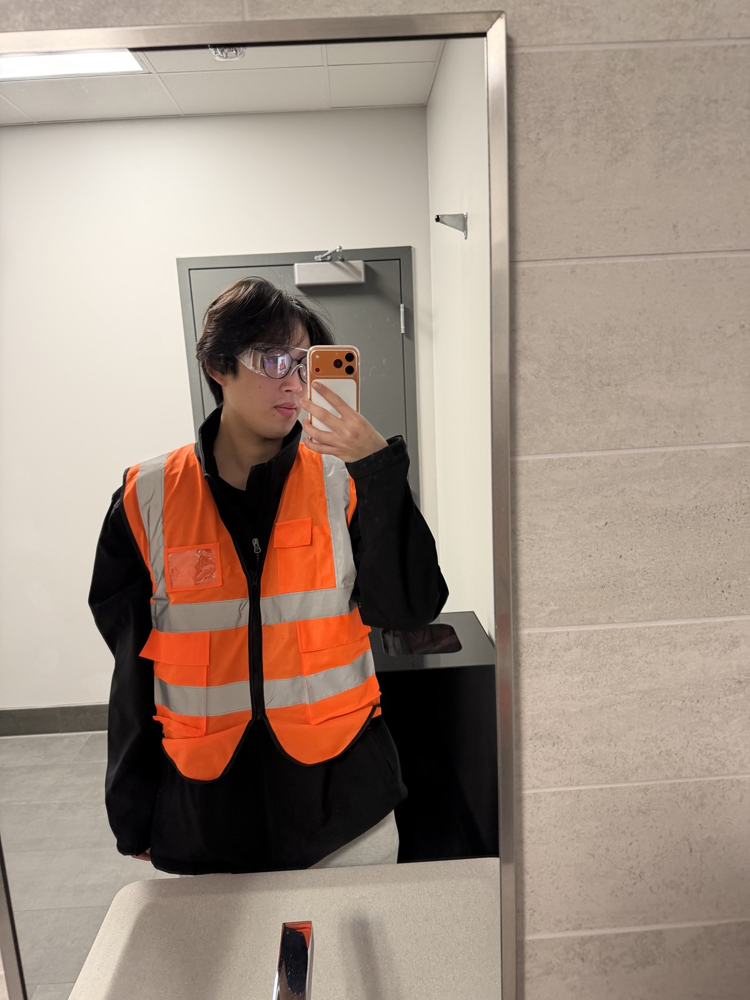
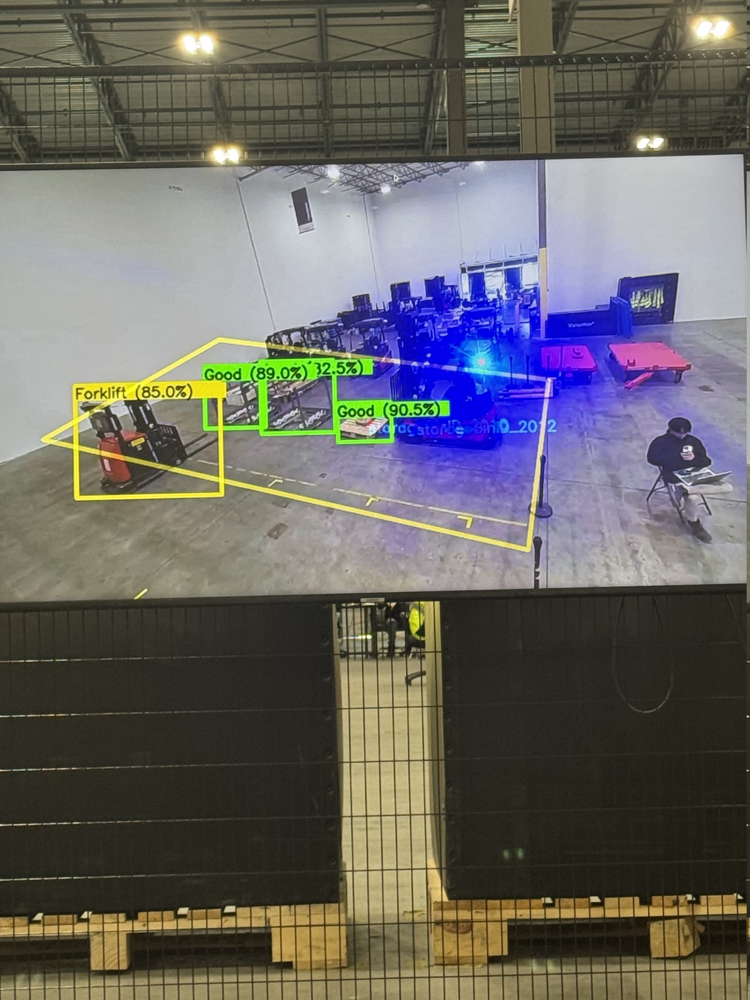
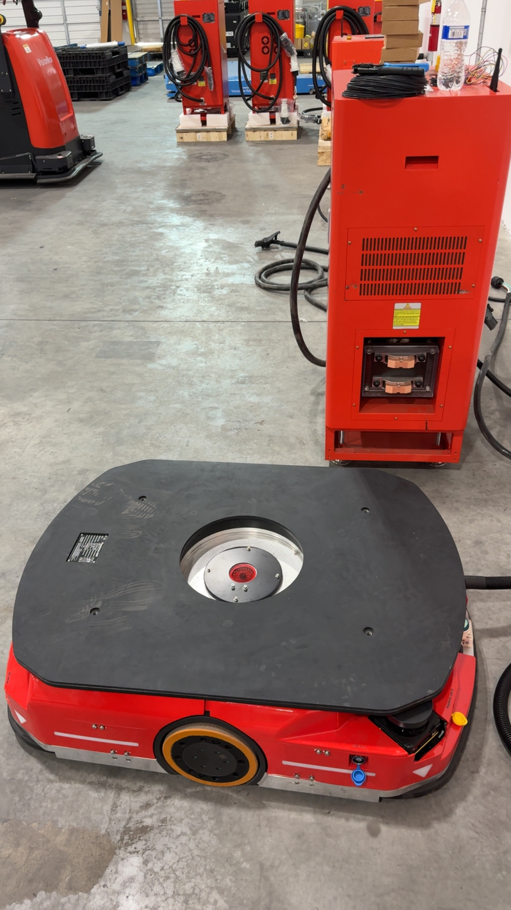
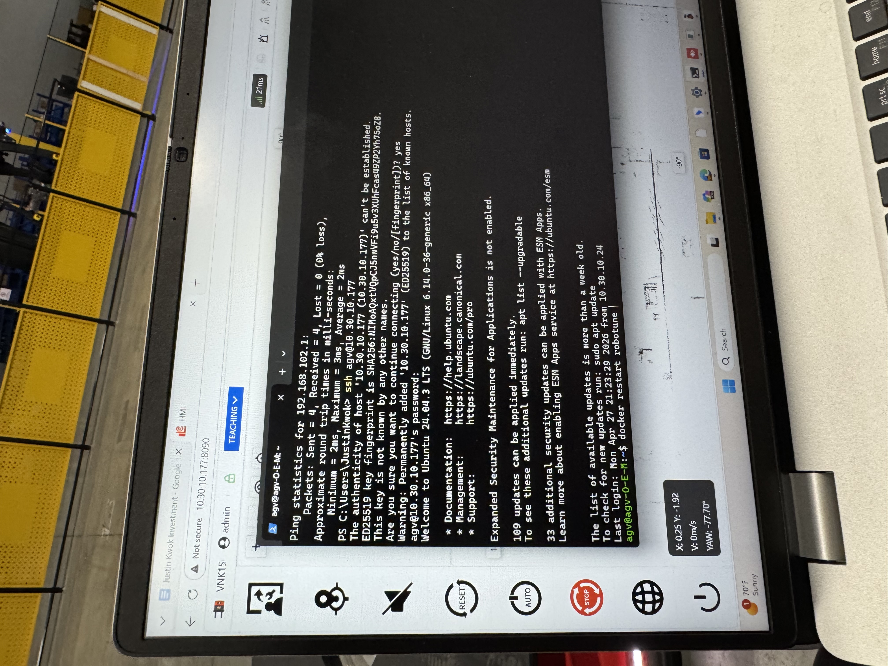

Robotics Deployment
AMR / AGV setup, site testing, robot readiness, and deployment validation for warehouse automation environments.
Robotics Deployment + Pre-Sales Engineering Portfolio
I connect field troubleshooting, RCS / Robotune validation, 3D SLAM mapping, safety demos, and customer-facing solution engineering with clear business value communication.

AMR / AGVDeployment, setup, validation, and customer-facing support.
 Field Ready
Field Ready
Using 3D SLAM to scan the space, build mapping data, and validate robot-ready routes.
Discovery + demos.

Focus Robotics deployment, troubleshooting, and solution engineering
Direction Sales Engineer / Field Application Engineer roles
About
Working onsite in General Motors, Ohio.
I am a robotics and automation project engineer with hands-on experience in AMR / AGV deployment, field testing, system validation, troubleshooting, and customer-facing technical coordination.
Through field work, showroom exposure, and deployment support, I have built experience across robot setup, network checks, map validation, safety testing, and technical communication. I enjoy translating complex robotics systems into practical business value for customers, project managers, operators, and engineering teams.
Experience
Robotics Project Engineer / Solution Engineer experience focused on field deployment, troubleshooting, route validation, and technical support that bridges robotics work with customer communication.
AMR / AGV setup, site testing, robot readiness, and deployment validation for warehouse automation environments.
Network checks, route behavior, charging / docking validation, map issues, and customer-site problem solving.
Explaining technical issues clearly to project managers, operators, customers, and engineering teams.
Projects

Problem Warehouse environments include people, forklifts, AGVs, AMRs, and objects moving in shared zones.
Technical Work Camera-based detection identifies forklifts, AMRs, AGVs, people, and warehouse items. Detection events connect to RCS robot control logic.
Result / Business Value Supports safer robot movement and gives customers more confidence in automation safety.

Problem AGVs need validated warning and protective safety zones before customer operation.
Technical Work Configured SICK LiDAR field areas, validated scan coverage, and transferred configuration / log data to the AGV.
Result / Business Value Improves route safety, reduces deployment risk, and supports field readiness.


Problem AMR systems need route, docking, charging, and network validation before customer-facing operation.
Technical Work Checked robot positioning, route readiness, charger alignment, docking access, and RCS / Robotune connection.
Result / Business Value Helps confirm deployment readiness and reduces downtime during customer demos or handover.
Sales Engineering
This section frames field robotics work as pre-sales value: customer discovery, demo readiness, technical explanation, solution presentation, and simple ROI discussion.
Robot setup, site testing, readiness checks, and deployment validation.
Route behavior checks, RCS status review, docking access, and network readiness.
Mapping scans, route-ready data, and site validation for robot navigation.
Warning fields, protective zones, scan coverage, and safety configuration transfer.
Detection demos for forklifts, AMRs, AGVs, people, and warehouse objects.
Listening for workflow pain points, safety concerns, visibility gaps, and demo goals.
Turning technical features into implementation steps and customer business value.
Building and deploying clear technical portfolio pages for customer-facing communication.
Pre-Sales Solution Demo
ROI Calculator
This lightweight calculator helps start a customer-friendly pre-sales conversation around labor saving and payback period.
This is a simple pre-sales estimate, not a final financial proposal.
Contact
Name Justin Kwok
Focus Robotics Deployment / Pre-Sales Engineering / Warehouse Automation
Portfolio https://kwokjustinn.github.io/robotics-portfolio/
LinkedIn Add LinkedIn URL here
Email Add email address here